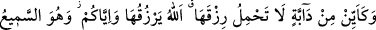
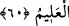

Akıllı kimseye gereken sûrî fenâdan önce nefsinden geçip (ölüp) ve mânevî fenâ
elemini tatmaktır. Zira dünya fenâ yurdudur.
Her nefis ölümü tadacaktır, herkesin yolu ölüme çıkar. Bu gidilmesi gereken bir yol,
geçilmesi gereken bir köprü ve içilmesi gereken bir şaraptır. Hz. Peygamber sürekli
ümmetine şu tavsiyede bulunurdu: “Lezzetleri ortadan kaldıran ölümü sıkça
hatırlayınız!”[196] Sakın ola ki ölümü unutmayınız ve onun gelmesinden gafil olmayınız.
İbrahim b. Edhem’e şöyle soruldu: Ey tarikat ehlinin önderi ve hakikat erlerinin
öncüsü! Gönlünüzün ve sinenizin derinliklerinde nasıl bir manevi hal ortaya çıktı ki
padişahlık tacını başınızdan bıraktınız, sultanlık libasını da üzerinizden çıkardınız;
dervişlik elbisesini giydiniz sıkıntı ve yokluğu seçtiniz?
İbrahim b. Edhem şu cevabı verdi: Evet, bir gün saltanat tahtına oturmuş, dört haşmet
ve azamet yastığına yaslanmıştım. Birden yüzümün önüne bir ayna tuttular. Baktım,
menzilimin toprak olduğunu gördüm; bana dost ve munis yoktu. Önümde uzun bir
yolculuk vardı ama azığım yoktu. Aydınlık bir zindan gördüm, ama benim ona takatim
yok. Adâletin kadısını gördüm, fakat benim huccetim yok.
Ey emel yaygısının bir köşesi çekilecek olsa, Kâf’tan Kâf’a dek kaplayan adam! Bir
bak, “Kâbe kavseyn”in sâhibi ne buyurur: “Beni insanlara gönderen Allah’a yemin
olsun ki, yere, ölümden önce tekrar basabileceğimi düşündüğüm bir adım atmadım.
Ağzıma, ölümden önce yutabileceğimi düşündüğüm hiçbir lokma koymadım.”
Öncekiler ve sonrakilerin efendisi, gök ve yer ehlinin önderi böyle buyurduğu halde
sen mağrur ve gafil bir şekilde önüne tûl-i emeli koymuş, yüzlerce yıllık plânlar
kurmuşsun, gönlünü de ona bağlamışsın. Haberin yok mu ki bu gaddâr dünya gurur
sarayıdır, sürûr yeri değil. Firar edilecek saraydır, kalınacak yer değil.
Senâî’den:
Bencillik ülkesi dünyada ne zaman âhireti inşâ edeceksin?
Firar yurdu dünyada ne zaman karar yurdunu bina edeceksin?
Afv dilemesi gereken can konuşmaktan aciz kalmadan önce
Ey mal sâhibi zenginler! İbret alınız, ibret alınız
Şu ibret alması gereken göz işini göremez hale gelmeden önce
Ey, kîl u kâl edenler! Kusurlarınızın bağışlanmasını isteyin
Keşfü’l-esrâr’da bu şekilde kaydedilmiştir.
60. Nice canlı var ki, rızkını (yanında) taşımıyor. Onlara da size de rızık veren